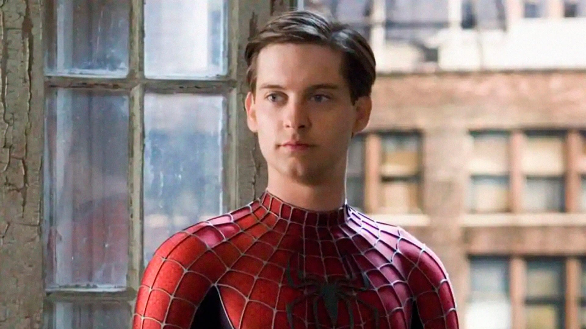

Sobre Tobey Maguire

Sobre Tom Holland
Sobre Andrew Garfield
Voltar para o inicio
Bônus
Curiosidades sobre Tobey Maguire
Tobey foi o primeiro ator a interpretar o Homem-Aranha em uma grande franquia de sucesso, começando com Homem-Aranha (2002), dirigido por Sam Raimi.
O famoso beijo entre Peter e Mary Jane na chuva foi muito desconfortável para Tobey, que quase se afogou com a água entrando no nariz durante a gravação.
Durante a pré-produção de Homem-Aranha 2, Tobey teve problemas nas costas e quase foi substituído por Jake Gyllenhaal, mas acabou se recuperando a tempo.
Sua trilogia ajudou a popularizar os filmes de super-herói como os conhecemos hoje, abrindo caminho para o gênero nos anos 2000.
A versão de Tobey é vista como mais madura e emocionalmente contida, com foco na responsabilidade e nos dilemas morais de Peter Parker.